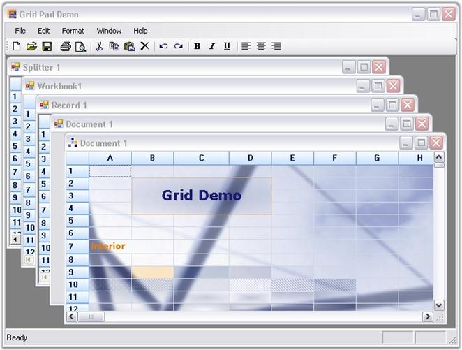

Essential Grid supports Multiple Document Interface (MDI) by enabling users to work with multiple grid controls simultaneously. Here, multiple windows reside under a single parent window.

Figure 193: Multiple Document Interface Support Illustrated
A sample demonstrating this feature is available under the following sample installation path.
<Install Location>\Syncfusion\EssentialStudio\[Version Number]\Windows\Grid.Windows\Samples\2.0\Product Showcase\Grid Pad Demo